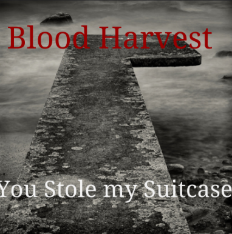

Challenge: Design a Band
Challenge Information
- -Design thinking is thinking creatively
- -The steps we took to design thinking was planning, interview and testing.
- -The steps we took in class were we first picked the name, album picture and album name randomly.Then we interviewed people to see what colors and writting they liked best.Then we put everything together and made it all fit in place.Then we made a second album cover then we did A&B testing. And whcih everone was picked was the one we stayed with.
Album Cover
Band Biography
When Rory was 10, he loved music, he loved singing and playing the guitar. He was so outgoing and excited about everything. When he turned 16, he moved to a new city , new school.There he met Tennant and Smith. Tennant played the drums and smith the bass.They all became friends one day in math class. They were forced to be in a group and do a challenge together. The challenge was a teambuilder, they were supposed to find out cool things from their classmates.There all found out they all played instruments, and the friendship began. They were all super good friends, one day Rory had a crazy idea to, form a band. They all agreed but now they needed a name. They loved Doctor Who, so they named themselves after a Doctor Who book; Blood Harvest. They started off small by playing at school events or at parks. They were soon sponsored by Switched on, that's when their career went off.They all changed their names, Rory to Pokey, Tennant to the Doctor and Smith to monster kitty.